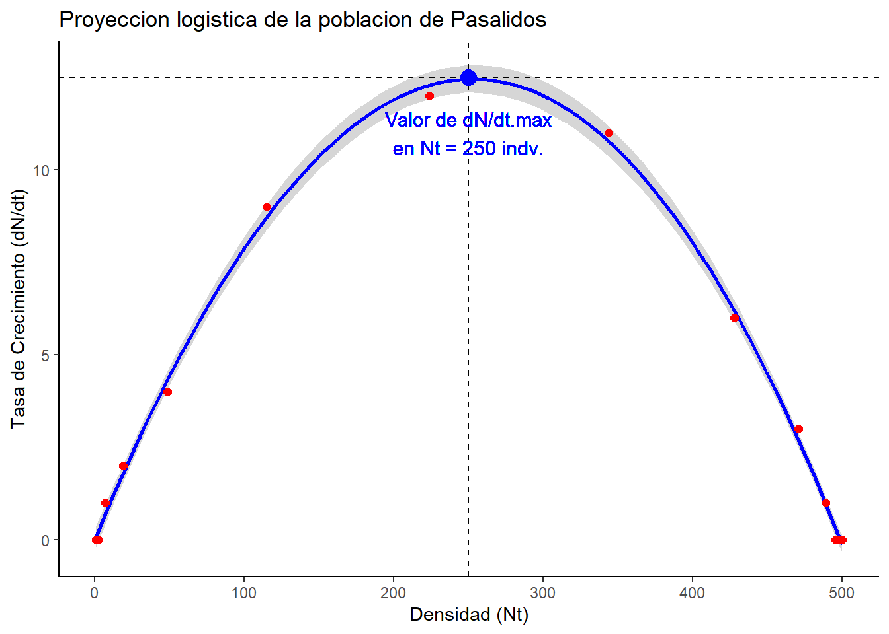

# Cálculo de la tasa o velocidad de crecimiento de la población de pasálidos
No = 200
k = 500
r = 0.1
dN_dt = r * No * (1 - (No/k))
dN_dt # Por cada més la población aumenta en 12 individuos[1] 12
Entrenamiento de procedimientos básicos para el análisis de modelos logísticos en poblaciones silvestres, con la aplicación del programa RStudio.

Pregunta 1
a) Datos No = 200 individuos k = 500 individuos r = 0.1 indv./indv. x mes dN/dt = ?
Paso 1: Datos para la ecuación logística
# Cálculo de la tasa o velocidad de crecimiento de la población de pasálidos
No = 200
k = 500
r = 0.1
dN_dt = r * No * (1 - (No/k))
dN_dt # Por cada més la población aumenta en 12 individuos[1] 12Paso 2 Base de datos
#
t = seq(0,100, by=5)
t [1] 0 5 10 15 20 25 30 35 40 45 50 55 60 65 70 75 80 85 90
[20] 95 100Nt = k/(1 + ((k-No)/No) * exp(-r*t))
round(Nt) [1] 200 262 322 375 416 445 465 478 487 492 495 497 498 499 499 500 500 500 500
[20] 500 500datos = data.frame(tiempo = t, densidad = round(Nt))
datos tiempo densidad
1 0 200
2 5 262
3 10 322
4 15 375
5 20 416
6 25 445
7 30 465
8 35 478
9 40 487
10 45 492
11 50 495
12 55 497
13 60 498
14 65 499
15 70 499
16 75 500
17 80 500
18 85 500
19 90 500
20 95 500
21 100 500Paso 3: Figura de la proyección logística de la población.
La Figura 1, muestra que la población de pasálido alcanza su capacidad de carga de 500 individuos en a los 75 meses.
#
library(ggplot2)Warning: package 'ggplot2' was built under R version 4.3.1t = 75
ggplot(datos, aes(x= tiempo, y= densidad)) + # Capa de ejes
# Capas de líneas del modelo
geom_line(color="blue") +
geom_point(color="red", size=2) +
geom_vline(xintercept = t, color = "black", linetype = "dashed") + # Línea de t (75) para N = k
geom_hline(yintercept = k, color ="black", linetype = "dashed") + # Línea de k (500)
# Capas de texto en la figura
geom_text(x = t + 0.5, y = 470,
label = paste("Valor de k\nen", t, "meses"),
color = "blue", size = 4, vjust = 0.5) +
geom_point(aes(x = t, y = k), color = "blue", size = 4) +
# Capas de rotulos de los ejes
labs(x= "t (Meses)", y ="Poblacion (Nt)",
title= "Proyeccion logistica de la poblacion de Pasalidos") +
theme_classic()b) Datos No = 200 individuos k = 500 individuos r = 0.1 indv./indv. x mes dN/dt max = ? Máxima capacidad o velocidad de aumento de la población
Paso 1: Datos para la ecuación logística
La velocidad de crecimiento k/2 fue de 12 individuos por mes y la velocidad o tasa máxima de aumento de la población es de 12.5 individuos por mes cuando se cuenta con un k/2 de 250 individuos (K=500 individuos)
#
No = 200
k = 500
r = 0.1
k_2 = 500/2
dN_dt.max = r * k_2 * (1-(k_2/k))
dN_dt.max # La veloidad máxima de aumento de la población es de 12.5 indv. / t[1] 12.5Paso 2 Base de datos de Nt vs. dN_dt
#
No= 1
t = seq(0,150, by=10) # Secuencia de tiempos de 0 a 150 meses
t [1] 0 10 20 30 40 50 60 70 80 90 100 110 120 130 140 150Nt = k/(1 + ((k-No)/No) * exp(-r*t)) # Cálculo de Nt para los diferentes tiempos (meses)
round(Nt) [1] 1 3 7 19 49 115 224 344 428 471 489 496 498 499 500 500dN_dt = r * Nt * (1 - (Nt/k)) # Cálculo de tasa dN_dt para los diferentes Nt
dN_dt [1] 0.099800000 0.269429521 0.718937093 1.859842376 4.444871573
[6] 8.834458084 12.359803148 10.746469685 6.141555821 2.732206600
[11] 1.083098136 0.409847507 0.152362391 0.056268217 0.020729435
[16] 0.007629933datos = data.frame(densidad_Nt = round(Nt), dN_dt = round(dN_dt))
datos densidad_Nt dN_dt
1 1 0
2 3 0
3 7 1
4 19 2
5 49 4
6 115 9
7 224 12
8 344 11
9 428 6
10 471 3
11 489 1
12 496 0
13 498 0
14 499 0
15 500 0
16 500 0Paso 3: Figura de la proyección logística de la población.
La Figura 2 muestra la relación de la velocidad de aumento (dN/dt) con el tamaño de la población (Nt), definiendo que la máxima tasa de aumento (dN/dt máx. = 12.5 indv. x meés) se presenta en un k/2 de 250 pasalidos. Este pstrón puede ser visualizado en la pendiente de la curva de la Figura 1.
#
library(ggplot2)
Nt = 250
# Capas de de los ejes de la figura
ggplot(datos, aes(x= densidad_Nt, y= dN_dt)) +
geom_smooth(color="blue") +
geom_point(color="red", size=2) +
geom_vline(xintercept = 250, color = "black", linetype = "dashed") + # Línea de t (75) para N = k
geom_hline(yintercept = 12.5, color ="black", linetype = "dashed") + # Línea de k (500)
# Capas de texto en la figura
geom_text(x = 250, y = 11,
label = paste("Valor de dN/dt.max\nen Nt = 250 indv."),
color = "blue", size = 4, vjust = 0.5) +
geom_point(aes(x = 250, y = 12.5), color = "blue", size = 4) +
#
labs(x= "Densidad (Nt)", y ="Tasa de Crecimiento (dN/dt)",
title= "Proyeccion logistica de la poblacion de Pasalidos") +
theme_classic()
Datos de el ejercicio:
No = 600 individuos k = 500 individuos r = 0.1 indv./indv. x mes dN_dt = ?
Paso 1. Datos para la ecuación logística
Si la población incia con 600 individuos, está supera a su capacidad de carga en 100 individuos, presentando una tasa o velocidad de disminución de 12 individuos por mes.
#
No = 600
k = 500
r = 0.1
dN_dt = r * No * (1-(No/k))
dN_dt[1] -12Paso 2. Base de datos
#
t = seq(0,100, by= 5)
t [1] 0 5 10 15 20 25 30 35 40 45 50 55 60 65 70 75 80 85 90
[20] 95 100Nt = k/(1+((k-No)/No)*exp(-r*t))
round(Nt) [1] 600 556 533 519 512 507 504 503 502 501 501 500 500 500 500 500 500 500 500
[20] 500 500# Base de datos (datos)
datos = data.frame(tiempo=t, densidad=round(Nt))
head(datos) # head muestra solo las 6 primeras filas de la tabla. tiempo densidad
1 0 600
2 5 556
3 10 533
4 15 519
5 20 512
6 25 507Paso 3. Figura de la proyección logística
La Figura 3 permite visualizar la el descenso de la población, debido a que la densidad inicial se encuentra por encima de su capacidad de carga.
#
library(ggplot2)
t = 55 # Tiempo en que la pob. desciende a su valor de k (500 indv.)
#
ggplot(datos, aes(x= tiempo, y=densidad)) +
geom_line(color="blue", size=1.2) +
geom_point(color="red", size= 3) +
geom_hline(yintercept = k, color = "black", linetype = "dashed") +
geom_vline(xintercept = t, color = "black", linetype = "dashed") +
labs(x= "t (meses)", y= "Población (Nt)",
title = "Proyección logística de la población") +
theme_minimal()